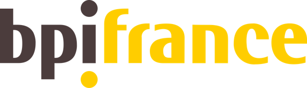

Prix et soutiens
Une première année
reconnue.
On peut lancer une entreprise de technologie agricole en Provence, à partir d'un drone et d'une idée. Ces distinctions le disent, et nous espérons qu'elles donneront envie à d'autres de se lancer.

Septembre 2026
101 Femmes Entrepreneures
Lauréate pour le Vaucluse.
Concours porté par Bpifrance et le ministère chargé de l'Égalité entre les femmes et les hommes : une lauréate par département, 101 lauréates retenues parmi 924 candidates, reçues à Paris en septembre 2026.

Juillet et septembre 2026
Be a Boss Women Tour
Lauréate Région Sud, finaliste nationale.
Sélectionnée parmi les entrepreneures de la région Sud, Julie Demarigny a défendu Agritech Provence lors de la finale nationale à Paris, le 24 septembre 2026.
Ils nous soutiennent
Merci à eux

Bpifrance
Prêt d'honneur et accompagnement.
Accompagnement sur l'idéation, sans lequel le projet n'aurait pas vu le jour.